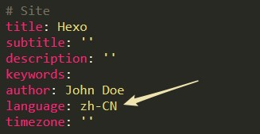
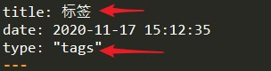
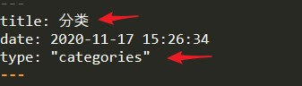

默认hexo博客框架使用的主题是landscape，而每个人对自己页面主题样式文本的喜好不同，所以接下来通过next主题案例来介绍如何更换主题及部分配置功能启用。更多主题参考链接：https://hexo.io/themes/
准备工作
已经生成hexo博客主页（可以参考我的上一篇博客）
代码编辑器（sublime、vscode等）
支持MarkDown语言的编辑器（推荐Typora）
注：站点配置文件指的是博客文件夹根目录中的_config.yml，主题配置文件指的是next主题文件夹下的_config.yml
下载、启用及配置next主题
下载next主题
点击链接跳转到github页面下载next主题压缩包https://github.com/theme-next/hexo-theme-next
解压至站点（博客文件夹根目录）的 themes 目录下，并将解压后的文件夹名称更改为next。
启用next主题
打开站点配置文件，推荐使用sublime, Ctrl+L快捷键输入theme找到 theme 字段，并将其值更改为 next（保证与themes文件夹下面next主题文件夹名字一致否则主题失效）。

更改后在命令行中Ctrl+C打断正在运行的服务，hexo s重新启动服务器，并在浏览器中刷新输入命令行中的本地地址，当出现下面的页面说明更换主题成功。

注：根据个人意愿删除themes文件夹下的landscape主题。
更改主题配置文件
更改主题为中文
在主题配置文件文件中找到language字段修改为zh-CN，如下图

按顺序在命令行中执行命令hexo clean、hexo g、hexo s，重启服务器后刷新页面即可生效。
小小吐槽一下：这步本人遇到了一点小坑，官方网站配置的参考如下图

然而配置完成后并没有生效，检查了一下next主题的根目录下的languages，发现有zh-CN.yml语言配置文件，于是值改成zh-CN后中文就生效了…
增加标签页、分类页
打开主题配置文件，找到menu字段，将下图白色箭头所示的注释打开（直接删掉前面的#或者注释快捷键都可以），在首页刷新，就可以看到红色箭头所示的效果（但是此时点开标签会报错空内容）。

关掉博客服务，然后输入命令hexo n page tags
命令执行完成后会在source目录下新增一个tags文件夹，内容为一个名为index.md的文件，可以用Typora打开并编辑。

再开启服务，刷新后点开首页中的标签就会有内容了。
关掉服务，输入命令hexo n page categories，命令执行完成后会在source目录下新增一个categories文件夹，内容为一个名为index.md的文件，可以用Typora打开并编辑。

再开启服务，刷新后点开首页中的分类就会有内容了。
next主题页面布局样式更改
进入站点配置文件，找到Scheme 字段，根据自己的喜欢更改主题的样式（打开一个，将其他注释），每次修改完成后都可以在浏览器中刷新查看主题样式的变化。

设置主题的头像
在主题配置文件中查找avatar，url后面的#号去掉，并按照你自己头像的后缀更改此处的头像名后缀，在主题next下的\source\images文件夹中删掉avatar.gif，替换为你此处在url中的命名图片即可，刷新页面就会有头像显示。

更改标题及作者
在站点配置文件中找到这几行，按需修改即可

启用左边社交栏链接
在博客的_config.yml中找到这几行，按需修改即可

如果有什么问题或者技术交流，欢迎在博客首页左下角社交或者下方发布渠道二维码与我联系。